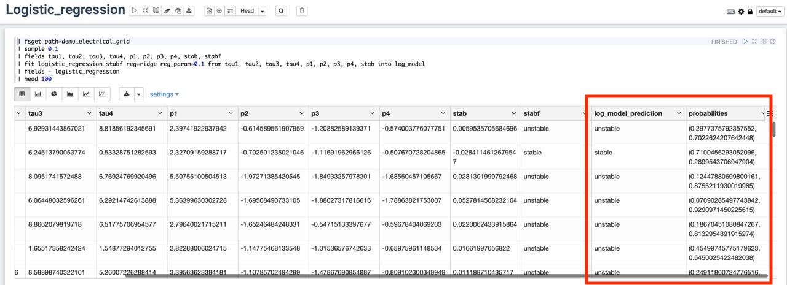

Логистическая регрессия
Логистическая регрессия - это популярный метод классификации объектов.
В основе метода использование логистической функции для определения вероятности принадлежности к классу. Реализованы бинарная (два класса 0 и 1) и мультиклассовая (возможно присвоение нескольких классов одному объекту) логистические регрессии.
Прогнозное значение класса помещается в новое поле таблицы.
Синтаксис команды
fit [logistic_regression | logreg]
[reg=<reg>]
[reg_param=<reg_param>]
[elasticnet_param=<elasticnet_param>]
[family=<family>]
[fit_intercept=<fit_intercept>]
[standardization=<standardization>]
[get_probability=<get_probability>]
[max_iter=<max_iter>]
[threshold=<threshold>]
[thresholds=<thresholds>]
<targetname> from <features> [into <modelname>]
Обязательные параметры:
- targetname — имя поля, содержащее название параметра, который требуется спрогнозировать.
- features — список полей, на которых будет обучаться логистическая
регрессия. Список задается перечислением, например:
from field1 field2.
Опциональные параметры:
- reg - метод регуляризации весов регрессии. Допустимые значения:
lasso(l1-регуляризация),ridge(l2-регуляризация),elasticnet(регуляризация ElasticNet). По умолчанию используется регуляризацияelasticnet. - reg_param - регуляризационный параметр, задаётся дробным неотрицательным числом. Чем выше
reg_param, тем строже регуляризация весов. Значение по умолчаниюreg_param=0.0. - elasticnet_param - параметр регуляризации для ElasticNet, задаётся в диапазоне [0, 1].
elasticnet_param=0.0задаёт l2-регуляризацию,elasticnet_param=1.0задаёт l1-регуляризацию. Значение по умолчаниюelasticnet_param=0.0. В общем случае рассчитывается какelasticnet_param * l1 + (1 - elasticnet_param) * l2.
- family - параметр задает тип регрессии, который будет использоваться для классификации: бинарная, мультиклассовая. Допустимые значения: binomial, multinomial, auto. Значение по умолчанию
family=auto. - fit_intercept - флаг для расчёта отклонения. Задается строкой "true" / "false". Данные должны быть отцентрованы, если
fit_intercept=false. Значение по умолчаниюfit_intercept=true. - standardization - флаг, показывающий требуется ли нормализация датасета перед регрессией. Задается строкой "true" / "false". Значение по умолчанию
standardization=true. - get_probability - флаг для добавления поля с вероятностями классов для каждого объекта. Задается строкой "true" / "false". Значение по умолчанию
get_probability=false. - max_iter - параметр задает максимальное число итераций алгоритма. Значение по умолчанию
max_iter=true. - threshold - параметр задает границу вероятности для предсказаний в бинарной классификации. Задается в диапазоне [0, 1]. Значение по умолчанию
threshold=0.5. - thresholds - параметр задает границу вероятности для предсказаний в мультиклассвой классификации. Задается в диапазоне [0, 1] для каждого из классов.
- modelname — название модели, с которым она будет сохранена в кэше. Чтобы сохранить модель в постоянное хранилище моделей для дальнейшего использования, используйте команду
save.
Пример использования
На демонстрационных данных с параметрами работы электрической сети спрогнозируем ее стабильность в зависимости от параметров работы сети(потребляемой и производимой мощности, коэффициента стабильности сети и длительности переходного процесса в сети, отражающего характер нагрузки).
Текст запроса
| fsget path=demo_electrical_grid
| sample 0.1
| fields tau1, tau2, tau3, tau4, p1, p2, p3, p4, stab, stabf
| fit logistic_regression stabf reg=ridge reg_param=0.1 from tau1, tau2, tau3, tau4, p1, p2, p3, p4, stab into log_model
| fields - logistic_regression
| head 100
Описание запроса
- Команда
fsgetзагружает данные из хранилища признаков. - Команда
sample 0.1оставляет 10% от всех загруженных строк. Это сделано для ускорения обучения (всего в обучающей выборке 10 000 строк). - Команда
fieldsоставляет только поля с длительностью переходного процесса (tau1,tau2,tau3,tau4), потребляемой и производимой мощностью(p1,p2,p3,p4), коэффициент стабильности (stab), по которым будет проводиться обучение. - Команда
fitвыполняет обучение модели логистической регрессии и временно сохраняет модель под названиемlog_model. - Команда
head 100выводит первые 100 строк таблицы после обучения.
Результат запроса
После выполнения запроса будет создана дополнительная колонка log_model_prediction, в которой будет записан результат прогноза модели на обучающей выборке.
В результате выполнения запроса могут быть созданы дополнительные служебные поля с информацией об обученной модели или другими показателями.
